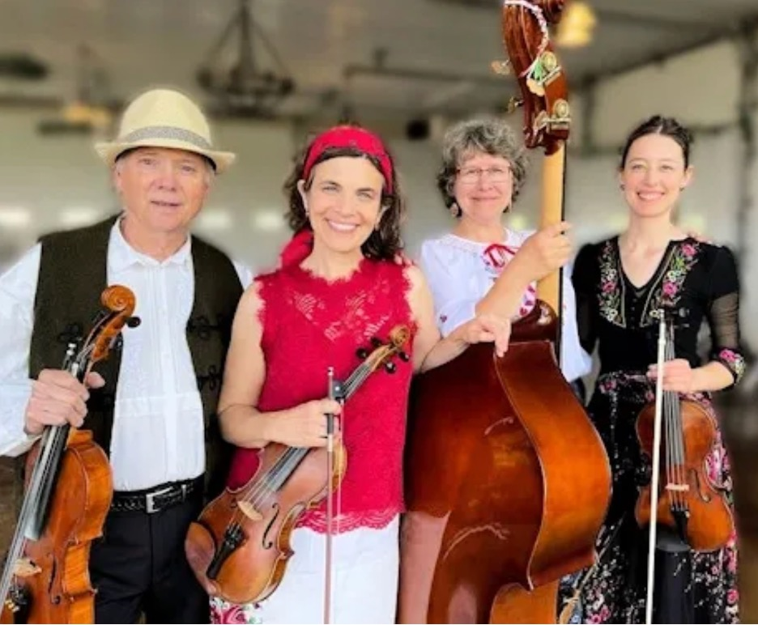
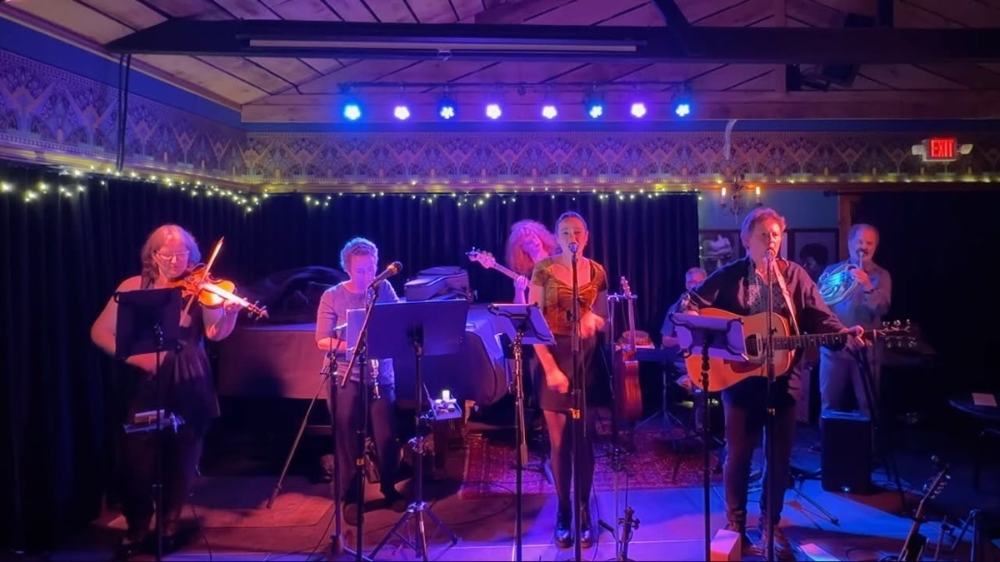

Artists
The Klezmatics

The Klezmatics are the only Grammy Award-winning klezmer band and one of the most iconic and adventurous groups in modern Jewish music. Since emerging from New York City’s East Village in 1986, they have led a global revival of klezmer, combining centuries-old Yiddish tradition with radical contemporary sensibilities.
For nearly four decades, The Klezmatics have brought their unique sound to audiences around the world—blending klezmer with jazz, gospel, punk, classical, Latin, and Balkan styles. Their music is rooted in Eastern European Jewish tradition but embraces a progressive worldview, tackling themes like human rights, antifundamentalism, diaspora, and cultural resistance.
Their impact is unmistakable. The Klezmatics are the only klezmer band to win a Grammy Award (Best Contemporary World Music Album for Wonder Wheel: Lyrics by Woody Guthrie). They have released 13 acclaimed albums, topped the Billboard World Music Chart, and received multiple international honors, including the German Critics Award and the New York Jewish Music Award.
Their work transcends genre and platform. The Klezmatics have performed in over 20 countries and in venues from Carnegie Hall to European cathedrals to rock festivals. Their music has been featured in films, television, theater, and dance, including collaborations with Tony Kushner (A Dybbuk), Pilobolus Dance Theatre (Davenen), and the scores of films by Pearl Gluck. Their songs have appeared on Late Night with David Letterman, NPR’s A Prairie Home Companion, and HBO’s Sex and the City.
The Klezmatics have collaborated with a vast range of artists including violinist Itzhak Perlman, Israeli star Chava Alberstein, gospel singer Joshua Nelson, Arlo Guthrie, poet Allen Ginsberg, Theodore Bikel, and more. Their Grammy-winning project with Woody Guthrie’s lyrics redefined the possibilities of Jewish-American musical storytelling.
See more →Fugu Dugu

Chicago’s Wild East Punk band Fugu Dugu unleashes its new album live—a theatrical collision of Balkan spirit, Slavic folklore, Americana, klezmer and punk.
Think Eastern European wedding meets punk-rock revolt: wild violins, pounding rhythms, dancing, shouting, and Baba Yaga let loose in America. Led by electrifying violinist Madame Broshkina and guitarist-songwriter Bucky Wanko, the female-fronted band delivers explosive performances where Slavic folklore meets modern storytelling, dance-floor energy, and raw emotion.
Expect powerful new songs, fan favorites, and a high-energy celebration that blurs the boundaries between concert, dance party, and folk ritual. Come experience one of Chicago’s most original live bands as they launch the next chapter of their musical journey.
See more →Nigunim Trio

 Photo by Meghan Marin
Photo by Meghan Marin

The Nigunim Trio features Grammy-winning Klezmatics co-founders Lorin Sklamberg (vocalist/accordionist) and Frank London (trumpeter), alongside multi-instrumentalist Rob Schwimmer. They perform devotional Hasidic nigunim and zmiros, reimagining traditional European Jewish melodies from dynasties like Gerer, Lubavitch, and Belzer through avant-garde improvisation and chamber-folk arrangements.
Lorin Sklamberg has been the lead singer of the Grammy Award winning Jewish American roots band the Klezmatics since its founding during the heyday of the alternative music scene in New York’s East Village in the mid 1980s. His work as vocalist, composer and multi-instrumentalist can be heard on some 50 recordings, solo and in collaboration with such diverse artists as Itzhak Perlman, Don Byron, Uri Caine, Matt Darriau, Rob Schwimmer, Jane Siberry, Marc Cohn, Tony Kushner, Moxy Früvous, the Western Wind, the Klezmatics, and Constantinople.
Trumpeter/composer Frank London is a member of the Klezmatics and the Hasidic New Wave, and has performed with John Zorn, LL Cool J, Mel Torme, Lester Bowie’s Brass Fantasy, LaMonte Young, They Might Be Giants, David Byrne, Jane Siberry, Ben Folds 5, Mark Ribot, Maurice El Medioni and Gal Costa, and is featured on over 100 CDs. His own recordings include Invocations (cantorial music); Frank London’s Klezmer Brass Allstars’ Di Shikere Kapelye and Brotherhood of Brass; Nigunim and The Zmiros Project (Jewish mystical songs, with Klezmatics vocalist Lorin Sklamberg); The Debt (film and theater music); The Shekhina Big Band; the soundtrack to The Shvitz; the soundtrack to Perl Gluck’s The Divahn; and four releases with the Hasidic New Wave.
Rob Schwimmer is a composer-pianist, thereminist, vocalist, and Haken Continuum player who has performed and recorded throughout the world. Praised by The New York Times for his “virtuosity, magic, and humor,” Rob has just completed his long-awaited second solo CD Heart Of Hearing for theremin, Haken Continuum and solo piano. Schwimmer most recently performed (January 2026) with the New York Philharmonic playing theremin at Lincoln Center in the debut performance of Charles Ives’ “Orchestral Set No. 2” under the baton of maestro Thomas Adès. Rob was also theremin soloist with the NY Philharmonic in their debut performance of Lera Auerbach’s “Icarus” under conductor Stéphane Denève in November 2025.
See more →Yid Vicious
 Photo by Meg Lamm
Photo by Meg Lamm
Yid Vicious has been engaging and delighting audiences throughout the Midwest since 1995. The group has released five CDs and has received numerous Madison Area Music Awards for its unique blend of traditional and contemporary klezmer. In 2009, Yid Vicious became the first performing arts ensemble in Wisconsin to receive a USArtists International grant, to perform at Argentina’s KlezFiesta, an international klezmer festival spanning three cities and including bands from ten countries. In 2006, Yid Vicious toured Chiba Prefecture, Japan as part of the Wisconsin-Chiba Sister State Goodwill Delegation.
Yid Vicious is committed to keeping traditional klezmer music and dance alive, while infusing the music with new styles and cross-cultural collaborations. The group has collaborated with internationally renowned klezmer dance instructor Steve Weintraub, and participated in the New York-based “KlezKamp: The Yiddish Folk Arts Program,” and Wisconsin’s “KlezKamp Roadshow.” Yid Vicious has presented concerts, workshops, and clinics at performing arts centers, cultural festivals, universities, and K–12 schools in Wisconsin, Minnesota, South Dakota, Iowa, Illinois, and Michigan, and has performed to statewide audiences on Wisconsin Public Radio and Wisconsin Public Television.
See more →Szászka

Szászka was originally founded in 1996 in Madison, Wisconsin, as a trio with Doug Code, Nienke Oomes, and Sara Bruins. Our home is now in Minneapolis, Minnesota. Our purpose is to share our love of traditional village dance music with audiences and dancers. We perform regularly at táncház (dance house) events, concerts, festivals, workshops in the Midwest United States and beyond. The group has studied with Hungarian and Transylvanian musicians in Hungary, Romania and the United States.
See more →LuLu Quintet

LuLu Quintet, formed 10 years ago, is comprised of Kate Zirbel on clarinet, Phil Schwinn on mandolin, Mark Kunkel on guitar, Simon Puleo on bass and Tom Klein on accordion. Zirbel and Klein are also the lead vocalists. The group’s “hot club” jazz blends elements of French musettes, which is the working-class dance music of the 1880s–1920s (which evokes for Americans the classic French café scene), Romany folk music and early American jazz. LuLu Quintet’s music is inspired by the Romany jazz guitarist and composer Django Reinhardt.
See more →Tsuzamen

Tsuzamen (Yiddish for “together”) is an indie klezmer band in Madison, Wisconsin. The band seeks to build community and connections through its music, which draws from klezmer, rock, bluegrass, blues, funk, and other world music traditions. The band comprises multi-instrumentalists and vocalists, and performances feature the violin, 5-string violin, oboe, English horn, French horn, melodica, guitar, banjo, mandolin, electric bass, Continuum Fingerboard, and of course voice. The three Co-directors of Klez Fest Midwest are members of Tsuzamen.
See more →Elm Duo

Elm Duo, a father-daughter team, has been performing together for over a decade. They are: the award-winning vocalist and fiddle champion Eleanor Mayerfeld (the EL in Elm Duo) and the guitarist and prize-winning composer Mike Bell (the M in Elm Duo). They call their style folk cabaret, an eclectic blend of acoustic music from bluegrass to jazz to klezmer and more. They also love the two hour-long “folk ballets” they have written and performed to the choreography and dancing of Kanopy Dance.
See more →